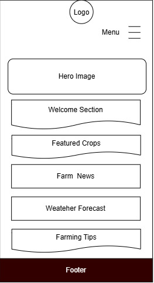
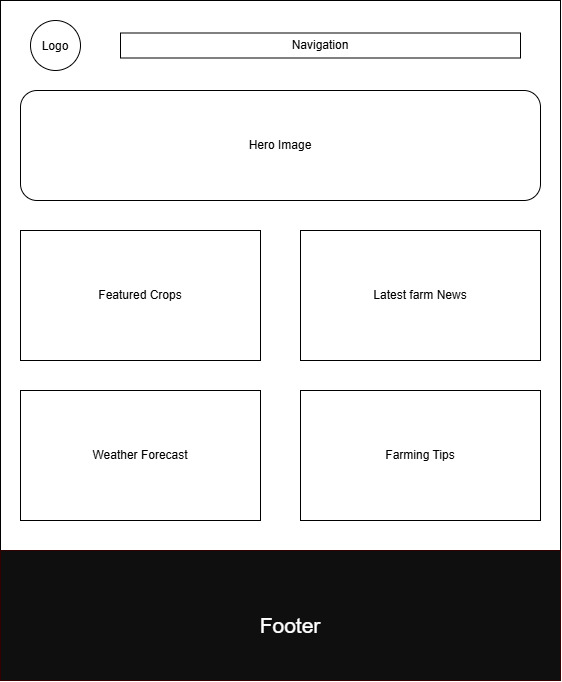

Site Name
Modern Agriculture Uganda
The name was selected because it clearly represents a website dedicated to modern farming practices, livestock management, agribusiness, agricultural technologies, and sustainable food production in Uganda.
Optional Domain: modernagricultureuganda.org
Site Purpose
This website provides farmers, students, agricultural entrepreneurs, and visitors with useful information about modern farming technologies, crop production, livestock keeping, irrigation methods, pest control, market information, and sustainable agriculture practices.
Target Audience Scenarios
- How can I improve my crop production using modern farming methods?
- Where can I learn about livestock management and animal health?
- Which irrigation systems are best for farming in Uganda?
- Where can I find current agricultural market prices?
Color Scheme
| Color | Usage |
|---|---|
| #2E7D32 | Headings, navigation, buttons, footer |
| #FFC107 | Buttons, highlights, accents |
| #F5F5F5 | Page background |
| #333333 | Body text |
Typography
| Font | Usage |
|---|---|
| Poppins | Headings and Navigation |
| Roboto | Paragraphs and General Text |
Wireframes
Below are the planned layouts for the website home page.
Mobile View

Desktop View

References
- Google Fonts - https://fonts.google.com/
- Unsplash Images - https://unsplash.com/
- Pexels Images - https://pexels.com/
- W3C HTML Validator - https://validator.w3.org/
- WebAIM Contrast Checker - https://webaim.org/resources/contrastchecker/